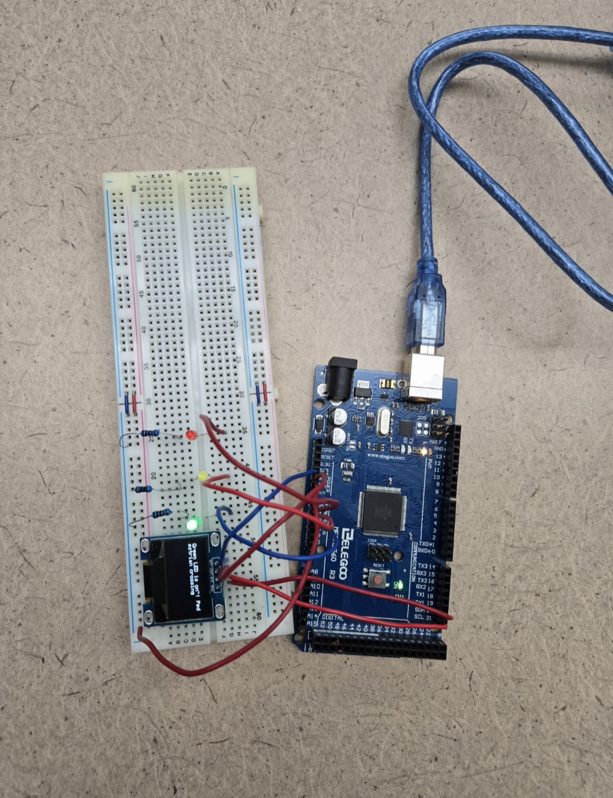

Project 1: Arduino Traffic Lights
I designed a circuit and created a program to run traffic signals using LEDs and displayed text on a screen
 Arduino Project IdeasProject 2: Arduino SR Flip Flop Design
I designed an SR Flip Flip which is a memory device with two stable states using an Arduino, LEDs, wires, and receptors
 40 Arduino Projects To Think About
40 Arduino Projects To Think About
Project 3: My Life
My life in itself is a project and its my biggest one. I strive to do my best everyday and learn something new. I try to keep an open mind when suggested new ideas and I try my best to always be on the move so life doesn't pass me by. My life right now is heavily focused on my education this semester and to further that I want to focus on getting more certifications. I think they will be very beneficial to my skillset and add value.
Google Certification Courses